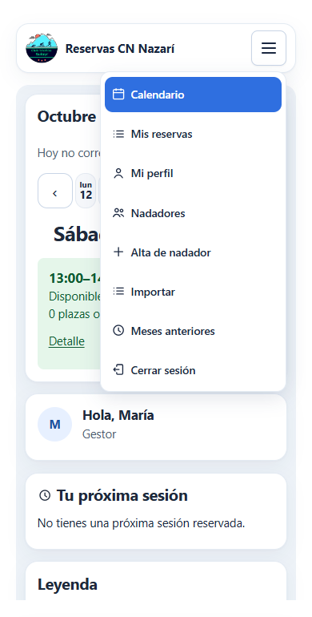
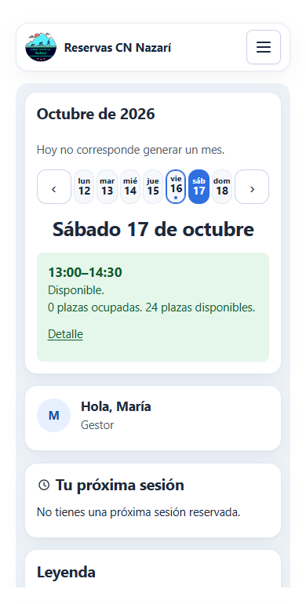
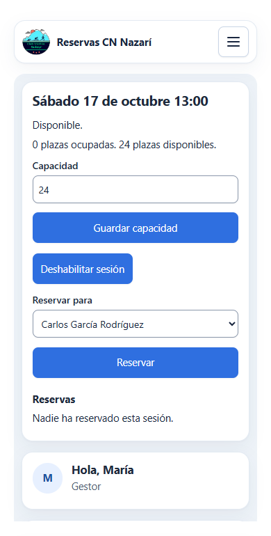
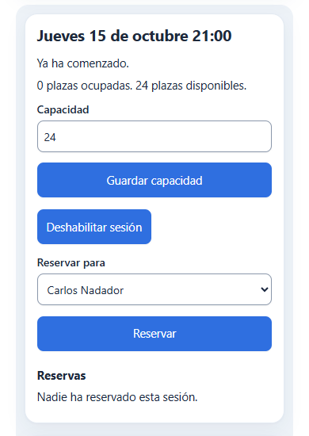
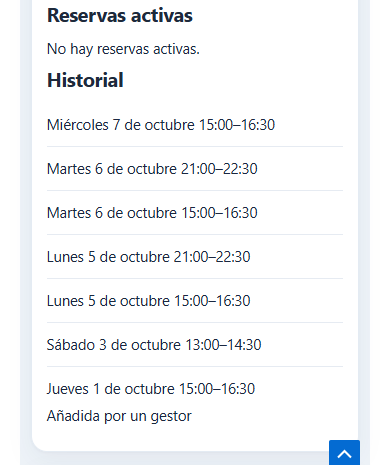
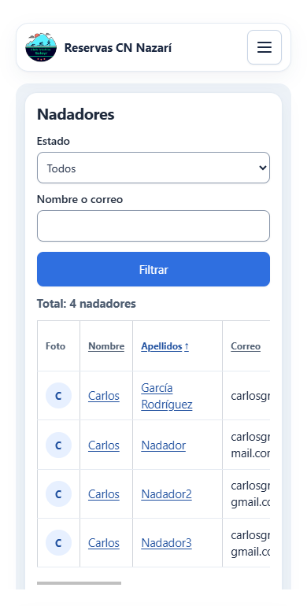
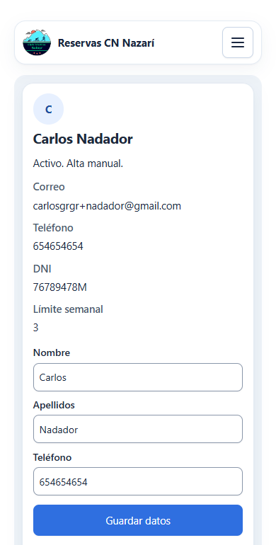
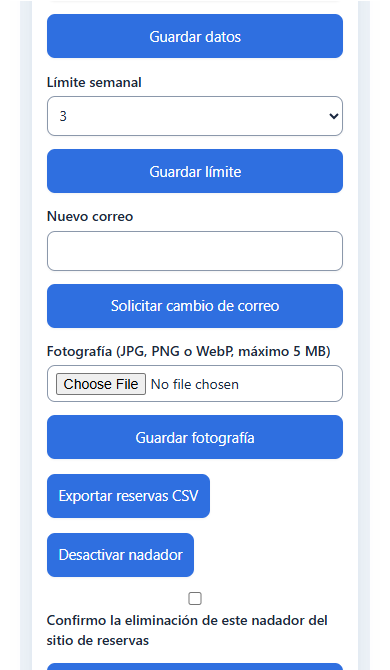
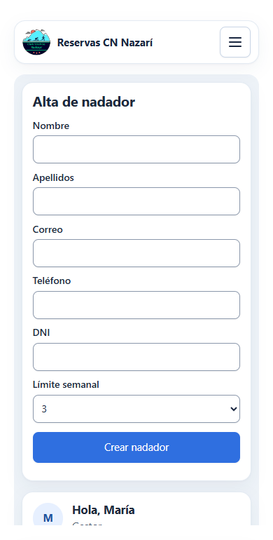

Guía rápida del gestor
Reservas de natación, en el móvil.
1. Entrar y menú
Abre la web de reservas y pulsa Iniciar sesión.
Pulsa el botón de las tres rayas para abrir el menú:
- Calendario: las sesiones.
- Nadadores: el listado y las fichas.
- Alta de nadador e Importar: añadir personas.
- Meses anteriores: calendarios ya pasados.
- Facturación: consulta del mes en curso y de los meses anteriores.
- Cerrar sesión.

2. Calendario
Se ve un día. Cambia de día con las flechas o tocando el día.
Cada sesión dice si está disponible, completa, deshabilitada o si ya ha comenzado, y cuántas plazas quedan.
Detalle abre la sesión.
Si aparece Generar sesiones de…, púlsalo una vez para crear el mes. Si dice «Hoy no corresponde generar un mes», no hay nada que hacer.

3. Gestionar una sesión
- Guardar capacidad: cambia el número de plazas. Bajarlo no quita a quien ya está apuntado.
- Deshabilitar sesión: la sesión sigue en el calendario, pero nadie puede reservarla.
- Reservar para: elige un nadador y pulsa Reservar.
- Cancelar reserva, en la tabla Nadadores apuntados, libera esa plaza. Los nadadores ven esa lista con nombre y foto, sin correo.
Cada nadador tiene un máximo de reservas por semana, de lunes a domingo. Si lo ha alcanzado, no se le puede apuntar.

4. Apuntar a quien vino sin reservar
- En el calendario, vuelve al día de la sesión con la flecha de la izquierda.
- Pulsa Detalle. La sesión dice «Ya ha comenzado».
- En Reservar para, elige al nadador.
- Pulsa Reservar.
En su ficha, esa sesión sale en el Historial con el texto «Añadida por un gestor».
La asistencia añadida cuenta en su límite de esa semana. Si el nadador ya lo había completado, no podrás añadir la reserva a no ser que aumentes su límite en la ficha.


5. Nadadores
Arriba hay un Contador de todas las fichas: total, CN Nazarí y CT Sulayr, con activos e inactivos. No cambia al filtrar.
Puedes filtrar por estado, por origen (CN Nazarí o CT Sulayr) y por nombre o correo. Pulsa Filtrar.
La columna Origen dice de cuál es cada ficha. La tabla se desliza hacia la derecha para ver el resto.
Toca el nombre para abrir la ficha.

6. Editar un nadador
- Nombre, apellidos o teléfono: cámbialos y pulsa Guardar datos.
- Reservas por semana: elige de 1 a 5 y pulsa Guardar límite.
- Correo: escribe el nuevo y pulsa Solicitar cambio de correo. La persona recibe un enlace en ese correo y tiene 24 horas para confirmarlo.
- Fotografía: elige la imagen y pulsa Guardar fotografía.
Si en una ficha no aparecen los campos de nombre o teléfono, esos datos no se cambian desde aquí.
Desactivar nadador le impide reservar y borra sus reservas futuras. Se puede volver a activar.
Pasar a CN Nazarí solo lo ve un administrador. Deja activa una ficha del club que sigue en natación después de la baja. El club ya no la desactiva. Hay que marcar antes la casilla de confirmación.
Eliminar nadador borra la ficha y no se puede deshacer. Hay que marcar antes la casilla de confirmación.


7. Alta de nadador
- Rellena nombre, apellidos, correo, teléfono y DNI.
- Elige el límite semanal. Si no lo cambias, queda en 3.
- Pulsa Crear nadador.
La persona recibe un correo para elegir su contraseña.
Para dar de alta a varias a la vez, entra en Importar, descarga la plantilla, rellénala y confirma las filas.
